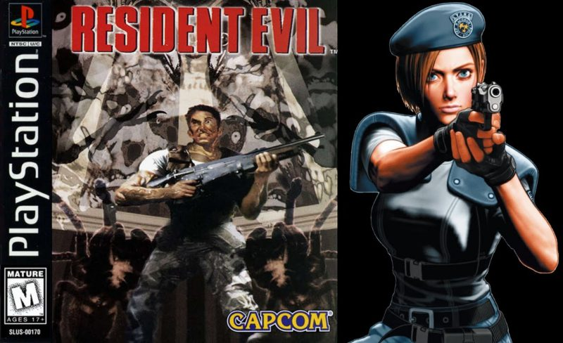
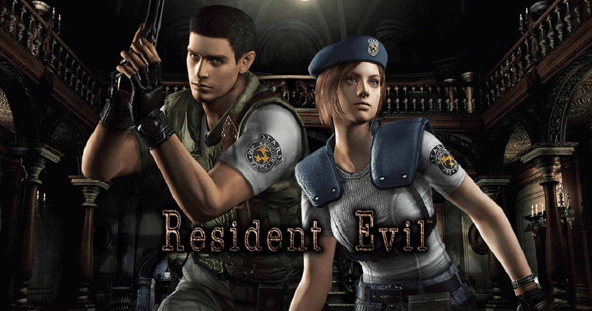

Intodruction
Resident Evil is a survival horror video game developed and released by Capcom originally for the PlayStation in 1996, and is the first game in the Resident Evil series. The game's plot follows Chris Redfield and Jill Valentine, members of an elite task force known as S.T.A.R.S., as they investigate the outskirts of Raccoon City following the disappearance of their team members. They soon become trapped in a mansion infested with zombies and other monsters. The player, having selected to play as Chris or Jill at the start of the game, must explore the mansion to uncover its secrets.
Plot
On July 24, 1998, when a series of bizarre murders occur on the outskirts of the fictional Midwestern town of Raccoon City, the Raccoon City Police Department's S.T.A.R.S. team are assigned to investigate. After contact with Bravo Team is lost, Alpha Team is sent to investigate their disappearance. Alpha Team locates Bravo Team's crashed helicopter and land at the site, where they are suddenly attacked by a pack of monstrous dogs, killing team member Joseph Frost. After Alpha Team's helicopter pilot, Brad Vickers, panics and takes off alone, the remaining members of the team (Chris Redfield, Jill Valentine, Albert Wesker, and Barry Burton) are forced to seek refuge in a nearby abandoned mansion.
Depending on which character the player assumes control of, either Chris or Barry are separated from the rest of the team during the chase and do not make it to the mansion. At this point, the team decides to split up to investigate. Over the course of the game, the player character may encounter several members of Bravo Team, including Enrico Marini, the captain of the S.T.A.R.S. Bravo Team, who reveals that one of Alpha Team's members is a traitor before being shot and killed by an unseen assailant. The player character eventually learns that a series of illegal experiments were being undertaken by a clandestine research team under the authority and supervision of biomedical company Umbrella Corporation. The creatures roaming the mansion and its surrounding areas are the results of these experiments, which have exposed the mansion's personnel and various animals and insects to a highly contagious and mutagenic biological agent known as the T-virus.
Gameplay
The player's character is a member of a special law enforcement task force who is trapped in a mansion populated by dangerous mutated creatures. The objective of the game is to uncover the mystery of the mansion and ultimately escape alive. The game's graphics consist of real-time 3D polygonal characters and objects, superimposed over pre-rendered backdrops with fixed camera angles. The player controls the character by pushing the D-pad or analog stick left or right to rotate the character and then move the character forward or backwards by pushing the d-pad up or down.

To fulfill the game's objective, the player uncovers various documents that provide exposition about the game's narrative, as well as clues that help them solve various puzzles within the mansion. Key items are also available that give the player access to other items or new areas. The player can arm their character with weapons to defend themselves from enemies, although the ammunition available for each firearm is limited and the player must learn to conserve the ammunition they have for situations where they will really need it. To restore the character's health, the player uses first-aid sprays or three types of healing herbs that can be mixed together in different combinations for different healing effects. The carrying capacity of the player is limited depending on the character and items that the player does not wish to carry at the moment can be stored into an item box to be retrieved for later use. To save their progress, the player must pick up an ink ribbon and use it on any of the typewriters scattered through key locations in the game. However, the supply of ink ribbons the player can acquire is limited much like the player's ammo and healing supplies. Players will encounter and fight various infected creatures as flesh-eating zombies, undead dogs, giant spiders, and other monsters.
Resident Evil Remake
Released for the GameCube video game console in 2002, it is a remake of the 1996 PlayStation game Resident Evil, the first installment in the Resident Evil video game series. Upon release, Resident Evil received critical acclaim from video game journalists, who praised its graphics and improved gameplay over the original game. It is often described as one of the best, scariest, and most visually impressive entries in the Resident Evil series. However, the game sold worse than expected, leading Capcom to change the direction of the series to a more action-oriented approach. In 2008, the game was ported to the Wii, featuring a new control system. In 2015, a high-definition remastered version was released for PlayStation 3, PlayStation 4, Windows, Xbox 360, and Xbox One to critical and commercial success.
HD Remastered
A high-definition (HD) version, Resident Evil HD Remaster, was released for PlayStation 3, PlayStation 4, Windows, Xbox 360, and Xbox One in January 2015. The HD version supports 5.1 surround sound as well as a resolution of 1080p and a widescreen aspect ratio of 16:9. Although the original pre-rendered backgrounds have a 4:3 format, the developers decided against re-rendering them in 16:9 because it would allow players to see more of the environment than intended, reducing the sense of immersion and danger. As a result, the developers added vertical scrolling to the backgrounds, which respond to the movement of the character, to fit the remaster's widescreen aspect ratio. A new control scheme was also included, allowing players to move their character in the direction of the analog stick.